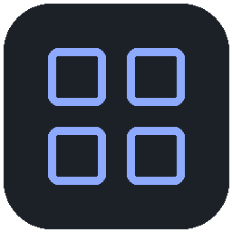

Make AppOn your computer
Interactive preview · no files are read or created
Your project. Now an app.
Choose a project, then save its app.
Creating an app doesn’t run your project. Opening the desktop app does.

Make AppChoose a project, then save its app.
Creating an app doesn’t run your project. Opening the desktop app does.